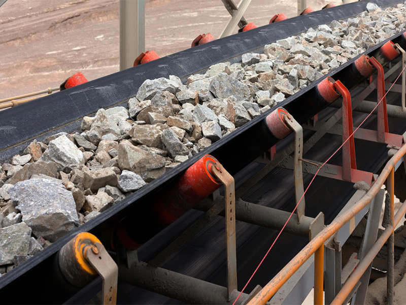
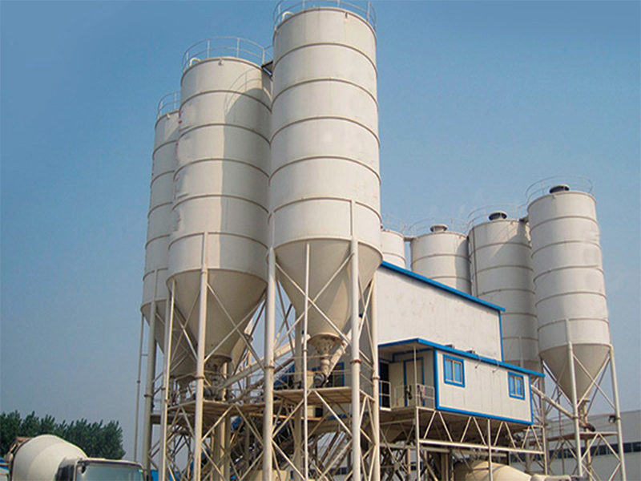

<!-- Features Section -->
<section id="features" class="features section">

    <div class="container">

      <ul class="nav nav-tabs row  d-flex" data-aos="fade-up" data-aos-delay="100">
        <li class="nav-item col-3">
          <a class="nav-link active show" data-bs-toggle="tab" data-bs-target="#features-tab-1">
            <i class="bi bi-binoculars"></i>
            <h4 class="d-none d-lg-block">Dosificadoras de concreto</h4>
          </a>
        </li>
        <li class="nav-item col-3">
          <a class="nav-link" data-bs-toggle="tab" data-bs-target="#features-tab-2">
            <i class="bi bi-box-seam"></i>
            <h4 class="d-none d-lg-block">Mixer</h4>
          </a>
        </li>
        <li class="nav-item col-3">
          <a class="nav-link" data-bs-toggle="tab" data-bs-target="#features-tab-3">
            <i class="bi bi-brightness-high"></i>
            <h4 class="d-none d-lg-block">Faja transportadora</h4>
          </a>
        </li>
        <li class="nav-item col-3">
          <a class="nav-link" data-bs-toggle="tab" data-bs-target="#features-tab-4">
            <i class="bi bi-command"></i>
            <h4 class="d-none d-lg-block">Silo de cemento</h4>
          </a>
        </li>
      </ul><!-- End Tab Nav -->

      <div class="tab-content" data-aos="fade-up" data-aos-delay="200">

        <div class="tab-pane fade active show" id="features-tab-1">
          <div class="row">
            <div class="col-lg-6 order-2 order-lg-1 mt-3 mt-lg-0">
              <h3>Dosificadora de Concreto</h3>
              <p class="fst-italic">
                La dosificadora de concreto es un equipo automatizado que garantiza una mezcla precisa y eficiente,
                optimizando materiales y reduciendo desperdicios. Disponible en versiones móviles y estacionarias, se
                adapta a distintos proyectos de construcción. Su sistema de pesaje digital asegura calidad y
                uniformidad en cada lote, y puede integrarse con mixers y silos de cemento para una producción más
                eficiente.
              </p>
              <ul>
                <li><i class="bi bi-check2-all"></i>
                  <spab>Estructura: Acero estructural reforzado con recubrimiento anticorrosivo para mayor
                    durabilidad..</spab>
                </li>
                <li><i class="bi bi-check2-all"></i> <span>Tolvas: Fabricadas en acero galvanizado, diseñadas para
                    almacenar y distribuir los agregados con precisión.</span></li>
                <li><i class="bi bi-check2-all"></i> <span>Sistema de pesaje: Sensores electrónicos de alta precisión
                    que garantizan la dosificación exacta de los materiales.</span></li>
                <li><i class="bi bi-check2-all"></i> <span>Panel de control: Interfaz digital automatizada para el
                    monitoreo y ajuste en tiempo real del proceso de dosificación.</span></li>
              </ul>
              <p>
                Optimiza tu producción con una dosificadora de concreto de alto rendimiento. Contáctanos para más
                información.
              </p>
            </div>
            <div class="col-lg-6 order-1 order-lg-2 text-center">
              
            </div>
          </div>
        </div><!-- End Tab Content Item -->

        <div class="tab-pane fade" id="features-tab-2">
          <div class="row">
            <div class="col-lg-6 order-2 order-lg-1 mt-3 mt-lg-0">
              <h3>Mixer de Concreto</h3>
              <p>
                El mixer de concreto garantiza una mezcla homogénea y mantiene la calidad del material durante su
                transporte. Disponible en versiones móviles y estacionarias, optimiza tiempos y reduce desperdicios,
                asegurando eficiencia en cualquier entorno de trabajo.
              </p>

              <ul>
                <li><i class="bi bi-check2-all"></i> <span>Tambor de mezcla: Acero reforzado con tratamiento
                    anticorrosivo para mayor durabilidad.</span></li>
                <li><i class="bi bi-check2-all"></i> <span>Paletas internas: Diseño optimizado para una mezcla
                    uniforme y sin segregación de materiales.</span></li>
                <li><i class="bi bi-check2-all"></i> <span>Sistema de rotación: Motor de alto rendimiento para una
                    mezcla constante y eficiente.</span></li>
                <li><i class="bi bi-check2-all"></i> <span>Chasis y soporte: Estructura resistente diseñada para
                    estabilidad y seguridad en operación.</span></li>
              </ul>
              <p>Maximiza la eficiencia en tu obra con un mixer de concreto de alto rendimiento. Contáctanos para más
                información.</p>
            </div>
            <div class="col-lg-6 order-1 order-lg-2 text-center">
              
            </div>
          </div>
        </div><!-- End Tab Content Item -->

        <div class="tab-pane fade" id="features-tab-3">
          <div class="row">
            <div class="col-lg-6 order-2 order-lg-1 mt-3 mt-lg-0">
              <h3>Faja Transportadora</h3>
              <p>
                La faja transportadora es un sistema eficiente para el traslado continuo de materiales en proyectos de
                construcción. Su diseño robusto optimiza tiempos y reduce costos operativos al agilizar la logística
                de agregados, cemento y otros insumos. Disponible en distintos tamaños y capacidades, se adapta a
                diversas necesidades industriales.
              </p>
              <ul>
                <li><i class="bi bi-check2-all"></i> <span>Estructura: Acero reforzado con recubrimiento
                    anticorrosivo.</span></li>
                <li><i class="bi bi-check2-all"></i> <span>Banda transportadora: Caucho de alta resistencia con
                    refuerzo interno.</span></li>
                <li><i class="bi bi-check2-all"></i> <span>Rodillos y poleas: Componentes de bajo mantenimiento para
                    un funcionamiento óptimo.</span></li>
                <li><i class="bi bi-check2-all"></i> <span>Sistema motriz: Motor de alto rendimiento para garantizar
                    un flujo continuo de materiales.</span></li>
              </ul>
              <p class="fst-italic">
                Optimiza la eficiencia en tu proyecto con una faja transportadora de alto rendimiento. Contáctanos
                para más información.
              </p>
            </div>
            <div class="col-lg-6 order-1 order-lg-2 text-center">
              
            </div>
          </div>
        </div><!-- End Tab Content Item -->

        <div class="tab-pane fade" id="features-tab-4">
          <div class="row">
            <div class="col-lg-6 order-2 order-lg-1 mt-3 mt-lg-0">
              <h3>Silo de Cemento</h3>
              <p>
                El silo de cemento es un sistema de almacenamiento seguro y eficiente diseñado para conservar el
                cemento en condiciones óptimas, evitando la humedad y la compactación. Su estructura robusta y
                hermética permite el suministro controlado del material, optimizando el proceso de dosificación en
                plantas de concreto. Disponible en diversas capacidades, se adapta a los requerimientos de cada
                proyecto.
              </p>
              <ul>
                <li><i class="bi bi-check2-all"></i> <span>Estructura: Acero reforzado con recubrimiento
                    anticorrosivo.</span></li>
                <li><i class="bi bi-check2-all"></i> <span>Válvula de descarga: Sistema de control para un flujo
                    preciso de cemento.</span></li>
                <li><i class="bi bi-check2-all"></i> <span>Filtro de aire: Previene la emisión de polvo y mejora la
                    eficiencia operativa.</span></li>
                <li><i class="bi bi-check2-all"></i> <span>Escalera y pasarela: Diseñadas para facilitar el acceso
                    seguro y mantenimiento.</span></li>
              </ul>
              <p>Mejora la eficiencia y almacenamiento en tu obra con un silo de cemento de alta capacidad.
                Contáctanos para más información.</p>
            </div>
            <div class="col-lg-6 order-1 order-lg-2 text-center">
              
            </div>
          </div>
        </div><!-- End Tab Content Item -->

      </div>

    </div>

  </section><!-- /Features Section -->